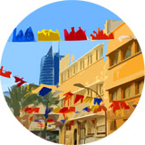
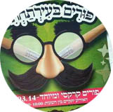
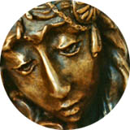
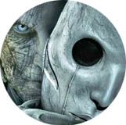
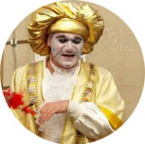

Purim 2017. All Articles
All articles for the Jewish feast of Purim
Purim. The Scroll of Esther by the artist Eliyahu Sidi
Leafing through Eliyahu Sidi's Megillat Esther, you will soon notice two layers: the first is the text of the ancient story of Purim… This layer is interwoven with another: a colourful, humorous depiction of the Nazi "final solution" of the Jewish question.

Purim. Celebrating in Haifa (the Lower City)
The special atmosphere of the feast in Ir ha-Tahtit, the Lower City of Haifa. Haifa celebrates Purim! Joy and kind smiles.

Purim. Tearing Off the Masks
Interestingly, this whole feast, and the book of Esther as a whole, could be called a book of disguises. We have already seen these masks in the names of the main characters, Mordechai and Esther, whose Hebrew name is Hadassah. And then we see a whole series of disguises.

Purim. Esther, an Image of the Saviour
The Bible presents to us heroes of faith in whom we can see a foreshadowing of the Messiah, the Deliverer, among them a Jewish woman named Hadassah (Queen Esther). I had the opportunity to create this image in bronze. These are my reflections on it.
Purim, a Feast for the WRONG KIND OF JEWS
I have MIXED FEELINGS when I think about some of the traditions of Purim. For example, the tradition of the Purim masquerade. After all, what is a mask? A desire to pass oneself off as someone one really is not.
Haman's Ears. Hamantash: a Recipe for Poppy-Seed Pastries
At Purim special pastries are eaten. Ashkenazi Jews bake triangular pastries with poppy seed. The recipe for oznei Haman (Haman's ears, hamantash) is here (with a video).
Mishloach Manot. Tasty Shopping at Mount Tabor (video in Russian)
Mishloach manot is the tradition of sending sweets from one's own table to relatives, friends and even passers-by before Purim. In this video my wife shares a visit to a special almond shop at the foot of Mount Tabor.
Purim. Holy Laughter-Making
The Purim-shpil (Yiddish for a Purim play) is a humorous or satirical play traditionally performed in Jewish communities at Purim. Sergey Komyagin: "Laughter-making and humour in themselves are a very serious weapon."

Purim. Exposing Evil
How acceptable is it for a believer to portray evil on stage? Sergey Komyagin and Sergey Lukyanov, actors of the Ekklesiast theatre, discuss this.

Haifa Celebrates Purim
The special atmosphere of the feast in Ir ha-Tahtit, the Lower City of Haifa. Haifa celebrates Purim! Joy and kind smiles, with a photo gallery.
CAN a Woman Blow the SHOFAR?
The Bible presents to us heroes of faith in whom we can see a foreshadowing of the Messiah, the Deliverer, among them a Jewish woman named Hadassah (Queen Esther). Through her the Most High shows His salvation to the Jewish people. This article reflects on what a woman is really capable of. Can she, for example, blow the shofar? Is it permitted?
The Actor from "Ushpizin" on His Search for Faith
Once a very well-known secular performer, now that he has returned to faith (he is now a Breslov Hasid) he is one of the most popular musicians (songwriter and performer), whose songs climb to the top of the Israeli charts.
Laughter Is No Sin. Sergey Lukyanov
"My stories are spiritual, satirical, heartfelt, but certainly not carnal." The actor and minister Sergey Lukyanov reads his stories, the most fitting occupation for Purim merriment.
Almond blossom at the foot of Mount Tabor: